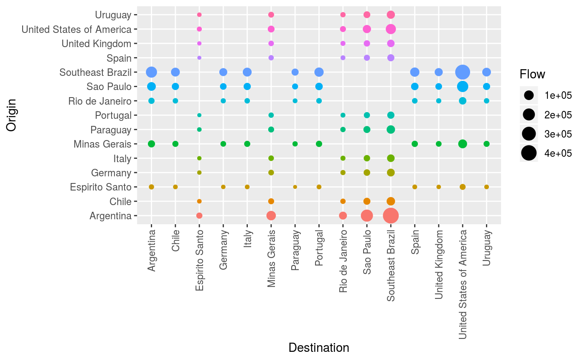

plot.epiflows.RdThe plot method for epiflows objects offers types of
graphics (argument type):
# S3 method for epiflows plot(x, type = c("map", "network", "grid"), ...)
| x | an epiflows object. |
|---|---|
| type | The type of plot to produce (defaults to map). |
| ... | arguments passed on to a given type |
map: flows are displayed on an interactive map; see map_epiflows for
more details
network: flows are displayed as a network using the htmlwidget
visNetwork and the plotting method for epicontacts objects; see
vis_epiflows for more details
grid: flows are displayed as a grid between origins and destinations;
see grid_epiflows for more details
data("Brazil_epiflows") # no coordinates, defaults to network plot(Brazil_epiflows)#> #># grid bubbleplot plot(Brazil_epiflows, "grid")# adding coordinates defaults to map data("YF_coordinates") ef <- add_coordinates(Brazil_epiflows, YF_coordinates[-1]) plot(ef)